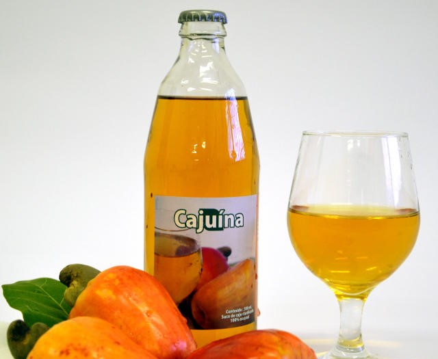

Receita
Cajuína

Ingredientes:
- 1 kg de cajus maduros
- 1 litro de água
- 1 colher de chá de clarificante (bentonita ou gelatina incolor sem sabor)
- Açúcar a gosto (opcional)
Modo de Preparo:
- Extração do suco: Lave bem os cajus, corte-os, retire as castanhas e a expresso ou bata no liquidificador para extrair o suco. Coe usando uma peneira ou pano limpo.
- Clarificação: Misture o clarificante (como bentonita ou gelatina incolor) no suco e deixe descansar por 1 a 2 horas. Isso fará com que as impurezas sedimentem no fundo.
- Filtragem: Após a decantação, filtre o líquido cuidadosamente com um pano ou filtro de café para obter um suco límpido e translúcido.
- Adoce (opcional): Adicione açúcar a gosto e misture bem, ajustando a doçura conforme sua preferência.
- Pasteurização: Aqueça o suco clarificado em uma panela a 70-80°C por cerca de 15 minutos, sem deixar ferver, para garantir a preservação e a segurança da bebida.
- Engarrafamento: Despeje a cajuína ainda quente em garrafas de vidro esterilizadas, tampe bem e deixe esfriar naturalmente antes de armazenar.
.png)